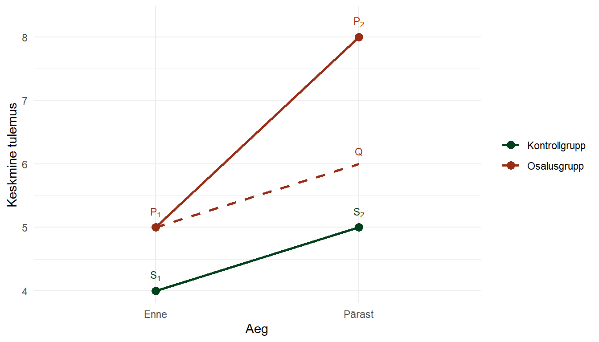

Peatükk 5 Kausaalsete mõjude hindamine
Oletame, et analüüsi eesmärgiks on hinnata tõõturukoolituste kausaalset mõju hõivesse sisenemise tõenäosusele, hõive jätkusuutlikkusele või hõivega seonduva sissetuleku suurusele. Seega üritame hinnata kuivõrd palju parandab koolitusel osalemine tööturu konkurentsivõimet võrreldes sellega kui koolitusel ei osaletaks. Taolise eesmärgi täitmiseks ei saa lihtsalt võrrelda väljundnäitajaid meetmes osalejate ja mitteosalejate vahel. Meetmes osalemist võivad mõjutada erinevad taustakarakteristikud (näiteks kõrgem haridus võib suurendada tõenäosust meetmes osaleda ja samas suurenda tõenäosust kõrgema sissetuleku teenimiseks, seega omistades antud juhul sissetulekute erinevuse põhjuse vaid meetmes osalemisele, ei võetaks arvesse seda, et osa sissetuleku erinevusest, ja seega ka mõjust, tuleneb kõrgemast haridustasemest).
Et täielikult elimineerida tasutatunnuste kompositsioonist tulenev mõju hinnatava meetme puhasmõjust, tuleks mõõta väljundnäitajaid olukorras, kus valimisse kuuluvad isikud osalesid meetmes ja samal ajal ka olukorras, kus nad ei osalenud meetmes (nn vastandeseisunditest lähtuv hinnang ehk counterfactual approach). Hinnates sel juhul muutust väljundnäitajates on võimalik hinnata meetme puhasmõju neile näitajatele.
Taoline mõõtmine ei ole aga reaalsuses loomulikult võimalik (isik kas osaleb meetmes või ei osale, mõlemad olukorrad ei ole üheaegselt võimalikud), tingides nn. fundamentaalse hindamisprobleemi. Probleemi on võimalik lahendada meetoditega, mille raames imiteeritakse vastandseisundeid empiiriliselt jälgitava võrdlusgrupi abil, mis sisuliselt tähendab, et igale meetmes osalejale leitakse täpselt samade karakteristikutega meetmes mitteosaleja.
Ideaalis peaks taoliste vastandseisundite loomine toimuma eksperimendi raames, kus meetmes osalemine määratakse ühele valimi osale (osalusgrupile) juhuslikult. Seejärel oleks võimalik osalusgruppi võrrelda selle valimi osaga, kellele meedet ei määratud (kontrollgrupp) ning kahe grupi erinevused väljundnäitajates peegeldaksidki meetme puhasmõju. Samas võib ka eksperimentidega kaasneda mitmeid võimalikke probleeme, milledest suuremastaabiliste meetmete hindamise puhul on vahest aktuaalseim ja oluliseim eksperimendi läbiviimisega kaasnev eetiline aspekt. Oleks ebaeetiline lubada meetmes (mis tõenäoliselt võib reaalselt parandada inimese elujärge) osalemist vaid osale (juhuslikult valitud) sihtrühmast. Samuti on eksperimendi teostamine ajamahukas ja kulukas. Praktikas kasutatakse seetõttu meetmete mõjude hindamisel pigem meetodeid, mille kaudu on võimalik simuleerida eksperimendi läbiviimist ehk teostada nn kvaasieksperiment.
Kuna eksperimentaalne disain ei ole alati teostatav, tuleb kasutada vaatlusandmeid (observational data), kus sekkumisse kaasamine ei ole juhuslik. Vaatlusandmetes on kausaalne mõju tihti segunenud kõrvalmõjude ja kaudsete mõjudega: täheldatav seos võib tekkida erinevate tegurite ja nende koosmõjude tõttu. Näiteks kui ravimit saanud patsientidel on parem tervis, võib see olla tingitud sellest, et nad olid algselt tervemad või motiveeritumad (mitte ainult ravimi toimest tingitult). Selliseid tegureid nimetatakse segavateks tunnusteks (confounding variables).
Seetõttu on välja töötatud meetodid, mis simuleerivad potentsiaalseid tulemusi mitteosalemise (või osalemise) korral. Niinimetatud kvaasieksperimentaalsed meetodid (quasi-experimental designs) püüavad leida indiviididele, kelle seas viidi mõjutamine/sekkumine läbi, nendega võimalikult sarnaseid indiviide, kelle puhul sekkumist/mõjutamist ei toimunud. Seeläbi saame võrrelda võrreldavaid ning tuletada korrektse mõjuhinnangu. Kvaasieksperimentaalsete disainide tuumaks on asjakohase identifitseerimisstrateegia leidmine, mis võimaldab tasakaalustada osalusgruppi ja kontrollgruppi kõigi vaadeldavate või vaatlematute tunnuste lõikes. Eesmärk on läheneda juhuslikult läbiviidud katsele ning sellega kõrvaldada valikukalle.
5.1 Potentsiaalsed tulemused
Potentsiaalsete tulemuste lähenemine (potential outcome approach), mida nimetatakse ka kontrafaktuaalseks raamistikuks (counterfactual framework), põhineb eelusel, et põhjusliku mõju hindamine on olemuslikult potentsiaalsete tulemuste võrdlus. See tähendab, et hinnatakse erinevust tulemuste vahet juhul, kui indiviidi mõjutatakse sekkumisega, võrreldes olukorraga kui teda ei mõjutata.
Kui meil on indiviid \(i\), ja \(y^1_i\) tähistab selle indiviidi tulemust mingi mõjutamise/sekkumise korral ja \(y^0_i\) tulemust mittemõjutamise (või mittesekkumise) korral, siis põhjuslikku mõju võib määratleda kui
\[ \Delta_i = y^1_i - y^0_i. \]
Populatsiooni sekkumisefekti leidmiseks peame võrdlema populatsiooni keskmist tulemust juhul kui kogu populatsioon on mõjutatud populatsiooni keskmise tulemusega juhul kui kedagi populatsioonist ei ole mõjutatud. Taolist populatsioonide keskmist vahe hinnangut nimetatakse keskmiseks sekkumisefektiks (ATE ehk average treatment effect):
\[ ATE = E(Y^1_i - Y^0_i), \]
ja see näitab mõju suurust juhul, kui kogu populatsioon osaleks programmis. Naiivse hinnangu jaoks oleks võimalik võrrelda populatsiooni sees mõjutatud grupi (osalusgrupp ehk treatment group) ning mittemõjutatud grupi (kontrollgrupi ehk control group) keskmisi tulemusi, kuid nagu õeldud, tegemist oleks naiivse hinnanguga (miks nii, sellest kohe varsti).
Saaksime arvutada ka keskmise sekkumisefekti sekkumisega mõjutatutele (ATT ehk average treatment effect of the treated):
\[ ATT = E(Y^1_i - Y^0_i \mid D_i = 1), \]
mis näitab mõju suurust neile, keda tegelikult mõjutatakse. Poliitikameetmete hindamisel huvitab meid tavaliselt just ATT-e suurus.
Kuna aga indiviid ei saa üheaegselt olla nii mõjutatud kui mittemõjutatud, siis tekib nn põhjusliku järelduse fundamentaalne probleem (fundamental problem of causal inference). Nii ATE kui ka ATT võrdlevad tegelikku vaatlustulemust \(Y^1_i\) potentsiaalse tulemusega \(Y^0_i\). Need hinnangud põrkuvad identifitseerimisprobleemiga, kuna potentsiaalsed tulemused on vaatlematud. Kui kasutaksime mittemõjutatud gruppi kui potentsiaalse tulemuse asendajat (naiivne hinnag, kus võrdleme mõjutatuid ja mittemõjutatuid), satuks hinnangusse valikukaldest (selection bias) tulenev viga.
Ei saa võrrelda pelgalt nende tulemusi, kes osalesid, nendega, kes ei osalenud, sest tulemusi võivad mõjutada mitmed muud tegurid lisaks sekkumise efektile või võivad needsamad või muud tegurid mõjutada sekkumisse kaasamise tõenäosust. Näiteks võib kõrgem haridustase suurendada tõenäosust, et inimene osaleb tööturumeetmes, ning ühtlasi suurendada kõrgema palga saamise tõenäosust olenemata sekkumisest. Tööturumeetme mõju sissetulekule võib seega olla näiline ehk vähemalt osaliselt tuleneda haridustaseme segavast mõjust (confounding effect). Taolist segavate regurite mõju nimetataksegi valikukaldeks (grupp on valiku põhjal kallutatud).
Keskmise põhjusliku mõju (nii sekkumisel kui ka sekkumiseta) seos osalusgrupi ja mitte-osalenute grupi keskmiste tulemuste erinevusega on järgmine: \[ E(Y_i \mid D_i=1) - E(Y_i \mid D_i=0) = \] \[ = \underbrace{ \bigl(E(Y_{1i}\mid D_i=1) - E(Y_{0i}\mid D_i=1)\bigr)}_{\text{osalusgrupi keskmine põhjuslik efekt}} \,+\, \underbrace{ \bigl(E(Y_{0i}\mid D_i=1) - E(Y_{0i}\mid D_i=0)\bigr)}_{\text{valikukalde (selection bias) komponent}}. \]
Esimene osa \(\bigl(E(Y_{1i}\mid D_i=1) - E(Y_{0i}\mid D_i=1)\bigr)\) on osalusgrupis (treatment group) sekkumise tegelik keskmine mõju, teine osa \(\bigl(E(Y_{0i}\mid D_i=1) - E(Y_{0i}\mid D_i=0)\bigr)\) näitab valikukallet.
Et kõrvaldada taustategurite segavad mõjud, tuleb kasutada meetodit, mis kontrollib nende tegurite mõju. Põhjusliku mõju hindamise „kullastandardiks“ on juhusliku valikuga eksperiment (randomized experiment), kus valitakse juhuslikult osalusgrupp (treatment group) milles viiakse läbi sekkumine ja kontrollgrupp (control group) kus sekkumist läbi ei viida. Kui sekkumisse määramine on tõepoolest juhuslik, kehtib järgmine tingimus: \(\{Y_1, Y_0\} \perp D\), mis tähendab, et nii potentsiaalsed tulemused \(\{Y_1, Y_0\}\) kui ka taustategurid on sõltumatud (\(\perp\)) sekkumise määramisest \(D\). Sellisel juhul kehtib ka \(E(Y_{0i} \mid D_i=1) = E(Y_{0i} \mid D_i=0)\), ehk potentsiaalsed tulemused ilma sekkumata on võrdsed sõltumata sellest, kas indiviid lõpuks puutub kokku sekkumisega või mitte. Teisisõnu, juhusliku valikuga katse puhul on osalusgrupp ja kontrollgrupp kõikide oluliste tunnuste lõikes enne sekkumist tasakaalus. Valikukalle on elimineeritud ja kahe grupi tulemuste erinevuse võib täielikult omistada sekkumise mõjule.
Lisaks sekkumisse määramise ja tulemuste vahelise sõltumatuse eeldusele, mis on põhjusliku mõju järeldamise seisukohalt hädavajalik, on kontrafaktuaalse mudeli identifitseerimiseks vajalik veel üks täiendav eeldus. Stabiilse üksuse sekkumise väärtuse eeldus (SUTVA ehk stable unit treatment value assumption) ütleb, et indiviidi \(i\) puhul kehtib \(Y_{id} = Y_i\) (s.t iga indiviidi jaoks on sekkumine sama) ning ühe indiviidi tulemust ei mõjuta teiste sekkumises osalemine (indiviidid on üksteisest sõltumatud).
Kuna eksperimentaalne disain ei ole alati teostatav, tuleb kasutada vaatlusandmeid (observational data), kus sekkumisse kaasamine ei ole juhuslik. Sellistel juhtudel on välja töötatud meetodid, mis simuleerivad potentsiaalseid tulemusi mitteosalemise (või osalemise) korral. Niinimetatud kvaasieksperimentaalsed meetodid (quasi-experimental designs) püüavad leida indiviididele, kelle puhul viidi mõjutamine/sekkumine läbi, nendega võimalikult sarnaseid indiviide, kelle puhul sekkumist/mõjutamist ei toimunud (või vastupidi). Seeläbi saame võrrelda võrreldavaid ning tuletada korrektse mõjuhinnangu. Kvaasieksperimentaalsete disainide tuumaks on asjakohase identifitseerimisstrateegia leidmine, mis võimaldab tasakaalustada osalusgruppi ja kontrollgruppi kõigi vaadeldavate või vaatlematute tunnuste lõikes. Eesmärk on läheneda juhuslikult läbiviidud katsele ning sellega kõrvaldada valikukalle.
Olemas on mitu identifitseerimisstrateegiat ja arvukalt meetodeid, mis aitavad osalus- ja kontrollgruppi tasakaalustada (terviklikke ülevaateid pakuvad Angrist & Pischke (2009), Morgan & Winship (2014) ning Rosenbaum (2010)).
5.1.1 Mida kausaalse mõju hindamisel tähele panna
Tugev eelduste vajadus - vaatlusandmete põhjal põhjuslike seoste leidmine eeldab, et oleme arvesse võtnud kõik olulised segajad.
Põhjusliku järelduse fundamentaalne probleem - me ei näe kunagi, mis oleks juhtunud samale isikule teistsuguse käsitluse korral
Valikukalle (selection bias): kui inimesed ise valivad ravi või meedet, võivad mõjutatud iniemsed erineda mittemõjutatud inimestest süstemaatiliselt (nt motiveeritus, sissetulek, tervis), mistõttu lihtne gruppide võrdlus on eksitav.
Mõõtmisvead ja koosmõjud: vahel võib põhjus ja tagajärg mõjutada teineteist vastastikku (nt tervis ja sissetulek) või andmetes on vigu ja määramatust (näiteks subjektiivne tervise hinnang), mis segavad põhjusliku efekti hindamist.
5.2 Mõju hindamise meetodid
Kausaalse mõju hindamiseks on välja töötatud mitmeid meetodeid, alates ideaalsest randomiseeritud eksperimendist kuni keerukamate vaatlusandmete analüüsimeetoditeni. Iga meetod püüab lahendada fundamentaalset probleemi erineval moel ja eelduste abil.
5.2.1 Kontrollitud eksperimendid
Kontrollitud eksperiment (eeskätt randomiseeritud kontrollitud katse, RCT) on kausaalse mõju hindamise kullatandard. Selle meetodi idee on lihtne: uuritavad jaotatakse juhuslikult (randomiseeritult) vähemalt kahte gruppi – osalusgrupp (saab sekkumise) ja kontrollgrupp (ei saa sekkumist või saab platseebot). Juhuslik jaotus tagab, et eelduslikult ei erine need grupid süstemaatiliselt ühegi olulise taustateguri poolest. Seega kui pärast sekkumist täheldatakse osalusgrupis erinevat tulemust kui kontrollgrupis, võib seda vahet tõlgendada põhjusliku mõjuna (sest muud seletused on randomiseerimise teel elimineeritud). Teisisõnu, randomiseerimine muudab sekkumise staatuse statistiliselt sõltumatuks potentsiaalsetest tulemustest, lahendades seeläbi segajate probleemi.
Kontrollitud eksperimentide tugevus seisneb sisemises valiidsuses – tulemuste usaldusväärsuses põhjusliku järelduse mõttes. Näiteks topeltpimedas meditsiinilises katses ei tea ei patsiendid ega arstid, kes saab pärisravimit ja kes platseebot; nii välditakse platseeboefekti ja vaatleja kallutatust. RCT tulemuste analüüs on sageli lihtne: põhjuslik mõju hinnatakse osalusgrupi ja kontrollgrupi keskmiste vahe kaudu. Formaalne statistiline test on tihti kahe sõltumatu valimi t-test või ANOVA. Kui tähistada \(\bar{Y}_1\) osalusgrupi keskmist tulemust ja \(\bar{Y}_0\) kontrollgrupi keskmist, siis mõjuhinnang \(\hat{\tau}\) on lihtsalt \(\bar{Y}_1 - \bar{Y}_0\). Juhuslikkuse tõttu saab sellele hinnangule leida ka usaldusintervalli ja p-väärtuse, mis näitab, kas efekt on statistiliselt oluline.
Näide: Oletame, et uurime uue haridusprogrammi mõju eksamitulemustele. Randomiseeritud katses valime koolidest juhuvalimi: pooltes koolides rakendame uut programmi (osalusgrupp) ja pooltes jätkatakse vanaviisi (kontrollgrupp). Aasta hiljem võrdleme testitulemuste keskmisi. Kui osalusgrupi õpilaste tulemused on oluliselt kõrgemad, saame üsna kindlalt öelda, et põhjuseks on programm – randomiseerimine peaks välistama muud süstemaatilised tegurid. Randomiseeritud katse eemaldab segajate mõju: näiteks kui programmiga koolides ongi veidi erinev õpilaste taust, on see erinevus juhuslik, mitte süsteemne. RCT-de tugevust illustreerib fakt, et see lahendab ka puuduvate potentsiaalsete tulemuste probleemi – kuna keskmiselt on mõlemal grupil samasugune taust, on iga “puuduv” kontrafaktiline tulemus asendatud teise grupi tegeliku tulemusega keskmiselt erapooletult.
RCT-de probleemid on aga praktilised: need võivad olla kallid, aeganõudvad või eetiliselt raskesti põhjendatavad. Mõnikord on ka randomiseerimine vigane (nt üht gruppi koheldakse teisiti) või tekib väljalangevus (drop-out), mis võib tulemusi kallutada. Sellegipoolest, kui eksperiment on hästi disainitud, peetakse selle tulemusi kausaalse järelduse osas kõige veenvamaks. Kõik järgnevad vaatlusandmete meetodid püüavad mingil moel imiteerida seda ideaalset kontrollitud olukorda.
5.2.2 Regressioonimudelid
Regressioonimudelid on kõige lihtsam ja tavalisem statistiline vahend valikukalde arvesse võtmiseks ja potentsiaalse põhjusliku mõju hindamiseks. Lihtsaim juhtum on lineaarne regressioon, kus tulemus \(Y\) modelleeritakse sekkumise \(T\) ja segajate \(X\)-ide lineaarse funktsioonina. Näiteks:
\[ Y_i = \alpha + \tau T_i + \mathbf{\beta}^\top X_i + \varepsilon_i\,. \]
Siin on \(\tau\) meie huvitatud koefitsient – selle eesmärk on tabada \(T\)-i (sekkumise) mõju \(Y\)-le, hoides samal ajal \(X\)-ide (segajate) mõju konstantsetena. Kui mudeli eeldused kehtivad, siis \(\tau\) hinnang \(\hat{\tau}\) peegeldab kausaalset efekti. Regressioon on parametriline meetod: eeldame konkreetset funktsionaalsuhet (lineaarsust) ning lisame kõik teadaolevad segajad kovariatiivseteks muutujateks, et “kontrollida” nende mõju eest.
Kui puudub oluline mudelist väljajäänud segaja ja mudel on korrektselt spetsifitseeritud, siis \(\varepsilon_i\) (vealiige) ei tohiks olla korrelatsioonis \(T_i\)-ga. Sellisel juhul võib öelda, et tingimuslik \(Y\) ja \(T\) seos peegeldab põhjuslikku mõju. Kõik, mis teeb osalus- ja kontrollgrupi erinevaks, on lisatud \(X\)-ide hulka. Regressioon korrigeerib lineaarse “kohandamise” teel gruppe nii, nagu nad oleksid võrreldavad. Näiteks kui osalusgrupis on keskmiselt nooremad inimesed, siis vanusemuutuja lisamine regressioonivõrrandisse kohandab tulemusi vanuse erinevuse suhtes.
Regressioonimudel eeldab üldiselt lineaarsust (võib lisada ruutliikmeid, interaktsioone, jne, aga mudeli spetsifikatsioon peab õige olema). Vale spetsifikatsioon (nt tegelikult on seos mittelineaarne) võib põhjustada valesid järeldusi (model misspecification bias) – kausaalne hinnang võib moonduda. Samuti, kui mõni segaja on puudu (vaadeldamatu või mudelist välja jäänud), siis regressiooni \(\hat{\tau}\) võib olla nihkega (bias’ega) – seda tuntakse kui väljajäetud muutuja kallak (omitted variable bias). Klassikaliselt: kui \(T\) korreleerub puuduva teguriga \(U\) (mis mõjutab \(Y\)-d), siis OLS regressioon annab \(\tau\) nihkega, mis sisaldab \(\text{Cov}(T,U)\) mõju. Regressioon ei eemalda maagiliselt segajat, mida mudelisse ei pandud. Seega eeldab regressioon kindlat teadmist, et kõik olulised mõjurid on arvesse võetud.
Probleemiks võib osutuda ka nn vastastikune põhjuslikkus kui \(Y\) ja \(T\) mõjutavad teineteist (nt sissetulek ja sotsiaalne staatus võivad vastastikku mõju avaldada). Samuti võivad mõõtmisvead \(X\)-ides või \(T\)-s vale \(\hat{\tau}\) anda.
Hoolimata neist piirangutest on regressioonimudelid väga võimsad ja paindlikud: neid saab üldistada mitmetele olukordadele (logistiline regressioon dihhotoomse tulemiga, paneelandmete puhul fikseeritud mõjudd jne). Sageli kombineeritakse regressioone teiste meetoditega – näiteks sobitamise järel regressiooniga korrigeerimine annab topelt-robustse hinnangu, mis on korrektne isegi siis kui üks mudel on veidi vale. Regressioon võimaldab ka väga lihtsalt lisada täiendavaid kovariaate, et suurendada mudeli efektiivsust.
Regressioon on kõige lihtsam mõju hindamise vahend: pane andmed mudelisse ja vaata, kas sekkumismuutuja koefitsient on oluline. Kuid ainult statistilise seose olemasolu regressioonis ei tõesta põhjuslikkust. Analüütiku ülesanne on põhjendada, miks just see mudel ja muutujate valik annab põhjusliku tõlgenduse – tihti toetutakse teooriale, varasematele uuringutele, testi tulemuste robustusele jne.
5.2.3 Instrumentaalmuutujad
Kui olulisi segajaid ei ole võimalik mõõta või kontrollida, saab kasutada instrumentaalmuutujate meetodit. Instrumentaalmuutuja (IV ehk instrumental variable) on mingi kolmas muutuja, mis mõjutab ainult sekkumismuutujat (\(T\)) ja ei mõjuta otseselt tulemust (\(Y\)) (ainult läbi \(T\)-i). Instrumentaalmuutuja toimib nagu looduslik eksperiment: see tekitab juhuslikku variatsiooni sekkumises, mida saab kasutada põhjusliku mõju eraldamiseks.
Klassikaline näide on sõjaväeteenistuse mõju sissetulekule. Kui inimesed ise valivad teenistusse mineku, siis tulevad mängu segajad nagu patriotism, tervis jne, mis mõjutavad nii teenistusse minekut kui hilisemat sissetulekut, aga kui värbamisel kasutatakse näiteks sünniaastate põhist loteriid (nagu USA-s Vietnami sõja draft-loterii puhul), mis juhuslikult mõjutas teenistusse kutsumist, siis saab seda kasutada instrumentaalmuutujana ning selle juhusliku variatsiooni abil hinnata teenistuse mõju sissetulekule (Angrist, 1990 kuulsa näitena).
Peab kehtima kolm peamist instrumentaalmuutuja \(Z\) eeldust:
1. Relevantsus: \(Z\) on korrelatsioonis sekkumise/selgitava muutujaga \(T\) (instrument mõjutab sekkumist);
2. Eksklusiivsuse piirang: \(Z\) ei mõjuta tulemit \(Y\) muul teel kui ainult läbi \(T\) (st puudub otsene mõju või alternatiivsed kaudsed mõjud);
3. Tinglik sõltumatus: \(Z\) on “as if random”, s.t. pole seotud ühegi vaadeldamatu segajaga, mis mõjutaks \(Y\)-d.
Kui need tingimused on täidetud, saab \(Z\) variatsiooni kasutada \(T\) mõju \(Y\)-le leidmiseks. Intuitsioon on, et kuna \(Z\) on juhuslik ja mõjutab \(T\)-i, siis \(Z\)-i mõju \(Y\)-le “läbib” \(T\)-i. Seega mõõtes, kui palju \(Y\) muutub koos \(Z\)-iga, ja jagades selle sellega, kui palju \(T\) muutub koos \(Z\)-iga, saame \(T\) mõju hinnangu.
Seda kirjeldab Waldi hinnangu valem lihtsal juhul (kui \(T\) ja \(Z\) mõlemad on binaarsed muutujad, nt ravi vs mitteravi, instrumentaalne loteriivõit vs mitte):
\[\hat{\tau}_{IV} = \frac{E[Y|Z=1] - E[Y|Z=0]}{E[T|Z=1] - E[T|Z=0]}\]
See on sisuliselt \(\frac{\text{Instrumendi mõju tulemile}}{\text{Instrumendi mõju ravile}}\). Näiteks kui loteriivõidu saanud teenisid keskmiselt 500€ vähem kui mittevõitjad, aga loteriivõit suurendas teenistusse mineku määra 50% võrra, siis teenistuse mõju hinnang oleks \(\frac{-500}{0.5}=-1000\) eurot (negatiivne mõju sissetulekule antud näites). Üldjuhul arvutatakse see kovariatsioonide kaudu: \(\tau_{IV} = \frac{\mathrm{Cov}(Z,Y)}{\mathrm{Cov}(Z,X)}\), eeldusel et instrument täidab eksklusiivsuse tingimust (kovariatsioon \(Z\) ja teiste \(Y\)-d mõjutavate tegurite vahel on 0.
Instrumentaalmuutuja meetodi tulemuseks on kausaalse mõju hinnang spetsiifilisele populatsioonile – nn LATE (Local Average Treatment Effect), see kehtib nende isikute kohta, kelle sekkumisstaatust instrument “mõjutas” (nt need, kes läksid teenistusse vaid siis, kui loterii neid kutsus). See on oluline piirang: IV meetod ei pruugi anda keskmist mõju kogu populatsioonile.
Näide: Kujutame ette, et soovime hinnata hariduse mõju sissetulekule, kuid inimestel on erinev anne ja taust (segajad). Instrumentaalmuutujana võiks kasutada näiteks ülikooli kaugust elukohast (sisseastumise loomulik eksperiment – lähemal elavatel on suurem tõenäosus minna ülikooli, kuid kaugus ise ei mõjuta otseselt hilisemat palka eeldusel, et muud tegurid on võrdsed). Kauguse (Z) mõju palgale (Y) läbib peamiselt haridustaseme (X). Arvutades keskmised palgad lähedal vs kaugel elavatel ja jaotades selle erinevusega ülikooli mineku määrades, saaksime hariduse mõju hinnangu. Loomulikult peab eeldama, et elukoha kaugus ülikoolist ei ole seotud võimekuse või pere taustaga – see on tugev eeldus, mida tuleb põhjalikult põhjendada ja testida (nt kontrollida taustamuutujate võrreldavust).
Piirangud: Instrumentaalmuutujate leidmine on tihti keeruline – vaja on leida midagi, mis mõjutab tugevasti sekkumist, kuid millel endal pole iseseisvat mõju tulemile. Sageli kritiseeritakse, et paljud instrumendid ei pruugi tegelikult eksklusiivsuse nõuet täita. Lisaks, nõrgad instrumendid (mis korreleeruvad \(X\)-iga väga nõrgalt) võivad anda ebatäpseid hinnanguid ja suuri vigu. Hoolimata sellest on IV meetod kasulik vahend olukordades, kus näiteks tavaline regressioonanalüüs ei ole võimalik, kuna erinevad segavad muutujad ei ole vaadeldavad - see pakub loodusliku eksperimendi sarnast lahendust.
5.2.4 Erinevuste erinevused
Erinevuste erinevuste meetod (Difference-in-Differences, lühidalt DiD) on kvaasieksperimentaalne meetod, et hinnata poliitika või sündmuse mõju olukorras, kus on andmed mitmes ajapunktis kahe grupi kohta. Meetodi eesmärk on võrrelda muutusi ajas osalusgrupis ja kontrollgrupis ning hinnata nende muutuste vahe. Mõõtes osalusgrupi ja kontrollgrupi erinevust enne sekkumist ning pärast sekkumist ning seejärel hinnates nende erinevuste vahet võib tuletada sekkumisest tingitud mõju võttes samal ajal arvesse püsivad erinevusi gruppide vahel ning ühised ajalised trende.
Idee selgitus: Oletame, et meil on kaks gruppi – osalusgrupp (nt piirkond, kus kehtestati uus poliitika) ja võrdlusgrupp (piirkond, kus poliitikat ei kehtestatud). Mõõdame mõlemas grupis tulemunäitajat (nt töötuse määr, keskmine palk vms) enne poliitika algust (aeg \(t_0\)) ja pärast poliitika rakendamist (aeg \(t_1\)). Kui me lihtsalt võrdleme osalus- ja kontrollpiirkonda pärast poliitika elluviimikst, võiksime ekslikult omistada piirkondade võimaliku erinevuse poliitikale, kui tegelikult võisid need piirkonnad juba varem erineda. Samuti võis vahepeal juhtuda midagi üldist (majandustõus/langus), mis mõjutas mõlemat piirkonda. Erinevuste-erinevuste meetod arvestab sellega, arvutades esmalt ajaerinevuse kummaski grupis (mis toimub eri ajapunktide vahel grupis endas), ja seejärel gruppidevahelise erinevuse nende ajamuutuste vahel.
Formaalselt on DiD mõjuhinnang:
\[ \hat{\delta}_{DID} = (\bar{Y}_{\text{osalus}, t_1} - \bar{Y}_{\text{osalus}, t_0}) - (\bar{Y}_{\text{kontroll}, t_1} - \bar{Y}_{\text{kontroll}, t_0})\,. \]
\(\bar{Y}\) tähistab keskmist tulemust vastavas grupis ja ajal. Esimeses sulus on osalusgrupi muutus ajas, teises kontrollgrupi muutus samal ajaperioodil; nende vahe ongi hinnang sekkumise mõjule, eeldusel et ilma sekkumiseta oleks osalusgrupi muutus olnud sama mis kontrollgrupil. Seda kriitilist eeldust nimetatakse paralleelsete trendide eelduseks – ilma sekkumiseta muutuksid mõlema grupi näitajad ajas ühtemoodi. Seda eeldust ei saa otseselt testida (sest osalusgruppi mõjutati), kuid seda saab kaudselt hinnata varasemate trendide võrdlemisega või teiste andmetega. Kui paralleeltrendid kehtivad, jätab DiD arvesse võtmata kõik püsivad erinevused gruppide vahel ning ühised ajatrendid, isoleerides seeläbi sekkumise efekti.
Allolev joonis illustreerib erinevuste erinevuste ideed. Punaste joontega on tähistatud osalusgrupi keskmine tulemus ajas (enne ja pärast sekkumist, punktid \(P_1\) ja \(P_2\)) ning kontrollgrupil vastavalt \(S_1\) ja \(S_2\). Katkendjoon \(P_1\)–\(Q\) näitab, milline oleks olnud osalusgrupi tulemus pärast sekkumist hüpoteetiliselt juhul, kui poliitikat poleks rakendatud (ehk kontrafaktuaalne tulemus, extrapoleeritud paralleelselt kontrollgrupi trendiga). DiD meetod eeldab, et \(P_1\)–\(Q\) on kontrollgrupi trendi (\(S_1\)–\(S_2\)) paralleelne teisend. Kausaalse mõju hinnang on siis vahe tegeliku osalusgrupi \(P_2\) ja kontrafaktilise \(Q\) vahel, mis on sama mis eeltoodud valemis: \((P_2 - P_1) - (S_2 - S_1)\).
Joonis 5.1: Erinevuste erinevuste meetodi illustratsioon: \(P_1\) ja \(P_2\) on osalusgrupi keskmised enne ja pärast sekkumist; \(S_1\) ja \(S_2\) on kontrollgrupi omad. Katkendjoon \(Q\) näitab osalusgrupi oletatavat tulemust ilma sekkumiseta (paralleelne kontrollgrupi trendiga). Kausaalse mõju hinnang DiD on \(P_2 - Q\), mis võrdub \((P_2-P_1) - (S_2-S_1)\).
Formaalne teostus toimub tihti regressioonimudeli abil, kus andmepunktideks on vaatlusüksused eri aegadel. Tavaliselt kaasatakse mudelisse indikaatormuutujad grupi (osalus vs kontroll) ja aja (enne vs pärast) jaoks ning nende koostoime. Näiteks regressioon:
\[Y_{it} = \beta_0 + \beta_1 \text{osalus}_i + \beta_2 \text{päras}_t + \beta_3 (\text{osalus}_i \times \text{pärast}_t) + \epsilon_{it}\,. \]
Siin \(\beta_3\) ongi DiD efekti hinnang, mis mõõdab, kui palju suurem (või väiksem) on osalusgrupi muutus võrreldes kontrollgrupiga. Regressioon teeb sisuliselt sama, mis käsitsi arvutatud erinevuste-erinevuste valem.
Peamine eeldus – paralleelsed trendid – on DiD usaldusväärsuse alus. Kui osalusgrupp juba enne sekkumist kaldus teisiti muutuma kui kontrollgrupp (näiteks osalusgrupi ja kontrollgrupi erinevus hakkas juba varem kasvama), siis annab DiD vale mõjuhinnangu. Samuti eeldab klassikaline DiD, et grupi koosseis ei muutu ajas drastiliselt (nt ei teki mõõtmiste vahel täiesti uusi inimesi, või kui tekib, siis proportsionaalselt mõlemas grupis). On ka vastastikmõju probleeme: näiteks kui poliitika rakendamine ühes piirkonnas mõjutab kaudselt ka teist piirkonda, ehk kui sekkumine mõjutab ka kontrollgruppi, siis ei saa me enam mõju hinnata. Lisaks statistilised kaalutlused: DiD andmed on tihti paanelandmed, mistõttu tuleb arvestada korduvmõõtmiste korrelatsiooni (tavaliselt kasutatakse robustseid standardvigu grupi tasemel).
5.2.5 Sobitamine
Sobitamisel (matching) võetakse aluseks osalusgrupp (valim meetmes osalenud isikutest) ja puhasmõju hindamiseks vajalike vastandseisundite loomiseks moodustatakse kontrollgrupp, kuhu valitakse osalusgrupiga teatud tunnuste alusel (nt sugu, vanus, haridus, leibkonna karakteristikud, eelnev tööturukäitumine) võimalikult sarnased inimesed, kes meetmes ei osalenud. Nende gruppide väljundnäitajate omavaheline võrdlemine võimaldab anda kõige lähedasema hinnangu meetme puhasmõjule ning seeläbi luua aluse andmaks hinnanguid ka meetme tulemuslikkuse kohta.
Sobitamise puhul võib probleemiks osutuda osalusgrupi liikmetele kontrollgrupist sobivate vastete leidmine. Kui piisavalt sarnast vastet ei ole võimalik leida, tuleb sarnasuskriteeriume lõdvendada (lugeda suhteliselt erinevad isikud piisavalt sarnaseks) või osalusgrupi liige, kellele vastet ei leitud, analüüsist kõrvale jätta. Seega tuleb leida rahuldav kompromiss hinnangu valiidsuse (kui loeme küllaltki erinevaid isikuid sarnaseks, siis võib mõju hinnang sisaldada lisaks meetme puhasmõjule ka taustatunnuste kompositsioonist tulenevat mõju) ja hinnangu reliaabluse osas (kui kaasame analüüsi ainult väga sarnased isikud, on tõenäosus leida sobivaid vasteid väiksem ja võib tekkida oht, et peame suure osa valimist analüüsist kõrvale jätma, mistõttu suureneb hinnangu standardviga ehk hinnangus sisalduv ebamäärasus).
Sobitamise läbiviimiseks on samuti mitmeid võimalusi. Täppissobitamise (exact matching) puhul seotakse osalus- ja kontrollgrupp sobitamise aluseks olevate tunnuste lõikes üks ühele. See meetod tagab küll väga täpse sobivuse osalusgrupi ja kontrollgrupi vahel, kuid kui sobitamise aluseks olevaid tunnuseid on palju, muutub osalusgrupile sobivate vastate leidmine küllaltki keerukaks (nn curse of dimensionality tingib olukorra, kus sobitamise aluseks olevate tunnuste arvu kasvades kasvab võimalike erinevate tunnusemustrite arv eksponentaalselt) ning nõuab väga suurt kontrollgrupi valimit. Täppissobitamisega analoogne, kuid valimimahule mõnevõrra leebemaid nõudeid esitav sobitamismeetod on rediskretiseeritud täppissobitamine (coarsened exact matching), mille puhul sobitamise aluseks olevad tunnused diskretiseeritakse ex ante uurija poolt lähtuvalt eelnevast teadmisest või teoreetilistest alustest (näiteks pidevtunnuseline vanus diskretiseeritakse vanusegruppideks lähtuvalt mingi meetmes osalemise loogika põhjal või haridustasemete puhul ühendatakse bakalauresuse-, magistri- ja doktoritase kõrghariduseks).
Kõige enamkasutatavaks meetodiks on tõenäosusepõhine sobitamine (propensity score matching), kus sotsiaal-demograafiliste tunnuste või näiteks varasema tööturukogemuse baasil leitakse nii osalusgrupile kui kontrollgrupile tõenäosus osaleda meetmes ning omavahel võrreldaks vaid neid inimesi, kellel on meetmes osalemiseks sarnane tõenäosus.
Propensity score on tõenäosus sekkumise toimumiseks antud kontrolltunnuste põhjal. Selle formaalne definitsioon on \(e(X_i) = P(T_i=1 \mid X_i)\), kus \(T\) on sekkumismuutuja (1=sekkumine, 0=mittesekkumine) ja \(X_i\) on kontrolltunnuste vektor. Rosenbaum ja Rubin (1983) näitasid, et kui osalusgrupp ja kontrollgrupp on sarnaste tõenäosusskooridega, siis on nad tasakaalustatud nende kontrolltunnuste jaotuste osas. Seega saab mitmemõõtmelise sobitamisprobleemi taandada ühemõõtmeliseks: igale osalusgrupi isikule leitakse kontrollgrupi isik, kelle \(e(X)\) on lähedane. Kui kontrolltunnuseid võib olla palju, aga tõenäosusskoor on üks number, mis summeerib sekkumise valiku tõenäosuse.
Sobitamise eesmärk on imiteerida randomiseeritud katset: teha nii, et osalusgrupil ja kontrollgrupil oleksid sarnased jaotusid kõigi oluliste vaadeldud tegurite suhtes. Kui see õnnestub, siis võib sekkumise mõju hinnata lihtsalt kahe rühma vahega (nagu eksperimendis). Erinevalt regressioonist ei eelda sobitamine lineaarset seost – see on mitteparameetriline meetod, mis valmistab andmed ette tasakaalustatud võrdluseks. Pärast sobitamist võib tulemi erinevust hinnata lihtsa keskmiste vahena või jooksutada sobitatud andmetel regressiooni (vajadusel koos sobituskaaludega).
Sobitamise alus on tasakaalustatus: ideaalis saavutatakse \((Y(0), Y(1)) \perp\! T \mid X\) ehk sekkumine on sõltumatu tulemustest tingimusel \(X\). Kui see kehtib ja kõik vajalikud muutujad on \(X\)-s, siis \(\mathbb{E}[Y(0)\mid T=1] = \mathbb{E}[Y(0)\mid T=0]\), mis tähendab, et kontrollgrupi keskmine on osalusgrupi kontrafaktuaal. Kausaalne efekt osalusgrupi jaoks (ATT) on siis \(\mathbb{E}[Y\mid T=1] - \mathbb{E}[Y(0)\mid T=1]\), kus teine osa asendatakse sobitatud kontrollgrupi keskmisega. Praktikas ei pruugi perfektset tasakaalu saavutada, seega hinnatakse üle jäänud tasakaalustamatust (nt standardiseeritud erinevused kovariaatides enne ja pärast sobitamist) ning vajadusel kohendatakse mudelit.
Vaatlusandmetes ei ole tõenäosusskoor teada ja see tuleb hinnata. Kõige sagedamini kasutatakse selleks mõnd parametreetilist mudelit, näiteks Logit- või Probit-mudelit, hinnates sekkumise tõenäosust vaadeldavate kovariaatide suhtes. Kui tõenäosusskoor on leitud, peab seejärel sobitama sekkumise saanud ja mittesaanud indiviidid, kelle skoorid on võimalikult sarnased. Levinuim praktika on üks-ühele sobitamine, mille korral iga osalusgrupi liige seotakse ühe sobivaima isikuga kontrollgrupist. Mõnikord kritiseeritakse seda, et selline lähenemine võib paljud kontrollgrupi vaatlused kõrvale jätta, vähendades seega valimi mahtu. Samas, kuna keskmiste võrdluse määrab peamiselt väiksema grupi suurus (mis jääb samaks), ei pruugi üldine hinangu jõudlus eriti langeda. Sobivuse määra hindamiseks kasutatakse enamasti lähima naabri meetodit (nearest neighbor), mis valib iga osalusgrupi liikme jaoks kontrollgrupist kõige sarnasema tõenäosusskooriga isiku. Kui mõnele osalusgrupi liikmele ei leidu piisavalt sarnast kontrollgrupi isikut, võib see viia „halbade sobitamisteni“. Selle vältimiseks saab kasutada lähima naabri meetodit määratud kalipri vahemikus (caliper distance), kus propensity skooride erinevus ei või ületada etteantud piirmäära. Kui mitu kandidaati jääb kalipri vahemikku, valitakse lähim, kui mitte ühtki, jäetakse see osalusgrupi liige võrdlusest välja.
Pärast sobitamisprotseduuri tuleb kontrollida, kas osalus- ja kontrollgrupp on kovariaatide lõikes tasakaalus. See tähendab, et tuleb hinnata, kas kovariaatide jaotus sarnaste tõenäosusskooridega sekkumise saanute ja mittesaanute hulgas on sarnane. Kui see nii ei ole, võib see viidata ebaõigesti määratletud tõenäosusskoori mudelile või sellele, et tingliku sõltumatuse eeldus ei kehti. Kovariaatide tasakaalu tagamiseks saab kontrollida standarditud keskmiste erinevust (standardized difference in means), mis võrdleb gruppide keskmisi standardhälvete ühikutes. Lisaks saab võrrelda ka kovariaatide kõrgema järgu momente ning kovariaatidevahelisi interaktsioone, et veenduda, et kovariaatide jaotus on sekkumise määramisest sõltumatu.
Näide: Meil on meede, mis pakub täiendkoolitust töötutele ja tahame hinnata selle mõju sissetulekule. Meil on vaatlusandmed osalejatest ja mitteosalejatest. Otsene võrdlus võib olla eksitav, sest meetmes osalejad võivad olla näiteks nooremad ja kõrgema haridusega (ja seetõttu võib-olla paremate väljavaadetega ka ilma meetmeta). Sobitame iga meetmes osaleja mõne mitteosalejaga, kellel on sarnane vanus, haridus, varasem töökogemus jne. Pärast sobitamist kontrollime, et keskmine vanus, haridusaastad jms on kahes grupis ligikaudu võrdsed – kui jah, siis võrdleme nende gruppide hilisemaid keskmisi sissetulekuid. Erinevus oleks hinnang meetme mõjule. Kui enne sobitamist oli näiteks programmis osalejate keskmine sissetulek 6500 ja mitterosalejatel 7000 (osalejatel isegi madalam, mis viitab tugevale valikukaldele), siis pärast sobitamist võivad grupid teineteisele läheneda. Oletame, et sobitamise järel on valimis osalejate keskmine jäänud 6500 ning sobitatud kontrollgrupil 6000. Nüüd on osalejatel kõrgem sissetulek, mis viitab meetme positiivsele mõjule (~500). Just sellise tulemuse andis ka kuulus Lalonde (1986) andmestiku analüüs: alguses näis, et tööpraktika programmist osavõtjate teenistus polnud parem kui mittesaanutel, kuid pärast sobitamist selgus positiivne efekt.
Sobitamise tulemuse usaldusväärsus sõltub sellest, kas kõik olulised segajad on mõõdetud ja sobitamismudelisse kaasatud. Kui mõni oluline tegur jääb arvesse võtmata (näiteks motivatsioon, mida on keeruline mõõta ja mida tihti pole andmetes), siis sobitamine ei pruugi valikukallet kõrvaldada – sel juhul on endiselt \(\mathbb{E}[Y(0)\mid T=1] \neq \mathbb{E}[Y(0)\mid T=0]\).
5.3 Sobitamine R’is
Kasutame klassikalist andmestikku – Lalonde’i (1986) andmeid töötukoolitusprogrammi kohta. Andmestik on pakketis MatchIt nimega lalonde ja sisaldab 614 vaatlust: 185 osalesid 1970ndate NSW (National Supported Work) tööharjutusprogrammis (treat = 1) ja 429 olid kontrollgrupis (treat = 0). Hindame kas töötukoolitusprogrammil oli mõju programmis osalenute sissetulekutele (1978. a tulu, re78).
# Laeme vajalikud paketid ja andmed
library(MatchIt) # sobitamiseks
data("lalonde") # laeb 'lalonde' andmestiku MatchIt paketist
# Uurime andmestiku struktuuri
dim(lalonde) ## [1] 614 9## treat age educ race married nodegree re74 re75 re78
## NSW1 1 37 11 black 1 1 0 0 9930.046
## NSW2 1 22 9 hispan 0 1 0 0 3595.894
## NSW3 1 30 12 black 0 0 0 0 24909.450Laeme MatchIt paketi ning Lalonde’i andmestiku. Kiire kontroll dim abil näitab, et andmestikus on 614 vaatlusrida ja 10 veergu (muutujaid). Funktsioon head kuvab esimesed read, veendumaks et andmed on laetud õigesti. Andmestiku veerud peaksid olema: treat (1=ravi, 0=kontroll), age (vanus), educ (haridusaastad), race (rass/etnilisus), married (1=abielus, 0=vallaline), nodegree (1=ilma keskkoolidiplomita), re74, re75 (tulud aastatel 1974 ja 1975), re78 (tulu 1978). Osalusgrupis (NSW) on paljudel re74 ja re75 väärtuseks 0, kuna nad olid enne programmi töötud (see ongi programmi sihtrühm).
Enne sobitamist vaatame osalusgrupi ja kontrollgrupi 1978. a keskmisi sissetulekuid ning nende erinevust:
# Keskmine 1978 sissetulek osalusgrupis vs kontrollgrupis enne sobitamist
mean(lalonde$re78[lalonde$treat == 1]) # programmis osalenute keskmine re78## [1] 6349.144## [1] 6984.17##
## Welch Two Sample t-test
##
## data: re78 by treat
## t = 0.93773, df = 326.41, p-value = 0.3491
## alternative hypothesis: true difference in means between group 0 and group 1 is not equal to 0
## 95 percent confidence interval:
## -697.192 1967.244
## sample estimates:
## mean in group 0 mean in group 1
## 6984.170 6349.144Tulemus viitab, et programmis osalenute 1978. a keskmine teenistus (~$6349) oli isegi madalam kui mittesaanutel (~$6984), kuigi vahe pole statistiliselt oluline (p~0.35). See on üllatav ja ei lähe kokku meie hüpoteesiga, et programmis osalemine parandab sissetulekut.
Miks nii võib olla? Programmis osalejad erinesid kontrollgrupist, paljud olid pikaajaliselt töötud, madalama haridusega jne. Seega tuleb eeldada tugevat valikukallet - osalusgrupi isikud olid ebasoodsamas seisus juba enne programmi ja nende madalam tulemus ei pruugi tingimata tähenda programmi ebaõnnestumist, vaid lähtetingimuste erinevust. Sobitamise abil püüame nüüd leida kontrollgrupist isikud, kes oleksid olnud programmi osalejatega võrreldavad, et teha tasakaalukam võrdlus.
Sobitamiseks saame kasutada paketi MatchIt funktsiooni matchit(). Kasutame propensity score sobitamist (valides distance = 'glm') lähima naabri meetodil (valides method = "nearest"). Valime kovariaatideks vanuse, hariduse, rassi, abieluseisu, haridustaseme (kas diplom on puudub). Lisame ka eelmiste aastate tulud (re74, re75), mis võiksid olla olulised tulutaseme ennustajad.
# Propensity score mudel: logistiline regressioon ravistatuse ennustamiseks
ps_match <- matchit(treat ~ age + educ + race + married + nodegree + re74 + re75,
data = lalonde,
method = "nearest",
distance = 'glm',
ratio = 1)
summary(ps_match)##
## Call:
## matchit(formula = treat ~ age + educ + race + married + nodegree +
## re74 + re75, data = lalonde, method = "nearest", distance = "glm",
## ratio = 1)
##
## Summary of Balance for All Data:
## Means Treated Means Control Std. Mean Diff. Var. Ratio eCDF Mean
## distance 0.5774 0.1822 1.7941 0.9211 0.3774
## age 25.8162 28.0303 -0.3094 0.4400 0.0813
## educ 10.3459 10.2354 0.0550 0.4959 0.0347
## raceblack 0.8432 0.2028 1.7615 . 0.6404
## racehispan 0.0595 0.1422 -0.3498 . 0.0827
## racewhite 0.0973 0.6550 -1.8819 . 0.5577
## married 0.1892 0.5128 -0.8263 . 0.3236
## nodegree 0.7081 0.5967 0.2450 . 0.1114
## re74 2095.5737 5619.2365 -0.7211 0.5181 0.2248
## re75 1532.0553 2466.4844 -0.2903 0.9563 0.1342
## eCDF Max
## distance 0.6444
## age 0.1577
## educ 0.1114
## raceblack 0.6404
## racehispan 0.0827
## racewhite 0.5577
## married 0.3236
## nodegree 0.1114
## re74 0.4470
## re75 0.2876
##
## Summary of Balance for Matched Data:
## Means Treated Means Control Std. Mean Diff. Var. Ratio eCDF Mean
## distance 0.5774 0.3629 0.9739 0.7566 0.1321
## age 25.8162 25.3027 0.0718 0.4568 0.0847
## educ 10.3459 10.6054 -0.1290 0.5721 0.0239
## raceblack 0.8432 0.4703 1.0259 . 0.3730
## racehispan 0.0595 0.2162 -0.6629 . 0.1568
## racewhite 0.0973 0.3135 -0.7296 . 0.2162
## married 0.1892 0.2108 -0.0552 . 0.0216
## nodegree 0.7081 0.6378 0.1546 . 0.0703
## re74 2095.5737 2342.1076 -0.0505 1.3289 0.0469
## re75 1532.0553 1614.7451 -0.0257 1.4956 0.0452
## eCDF Max Std. Pair Dist.
## distance 0.4216 0.9740
## age 0.2541 1.3938
## educ 0.0757 1.2474
## raceblack 0.3730 1.0259
## racehispan 0.1568 1.0743
## racewhite 0.2162 0.8390
## married 0.0216 0.8281
## nodegree 0.0703 1.0106
## re74 0.2757 0.7965
## re75 0.2054 0.7381
##
## Sample Sizes:
## Control Treated
## All 429 185
## Matched 185 185
## Unmatched 244 0
## Discarded 0 0matchit() funktsiooni argumentidena saame (muu hulgas) defineerida:
- method = mis meetodit kasutame, näiteks “nearest” (vaikimisi), “optimal”, “genetic”, “exact” jne;
- distance = mis kaugusemõõdikut kasutame, näiteks “glm” ehk propensity score (vaikimisi), “mahalanobis”, “euclidean” jne;
- caliper = maksimaalne distants, mille raames vasteid otsitakse;
- exact = tunnused, mille lõikes leitakse täpsed vasted (samal ajal saab teisi tunnuseid kasutada näitkes propensity score matchingus);
- ratio = mitu kontrollgrupi vastet igale osalusgrupi vaatlusele otsitakse (vaikimisi 1);
- replace = kui TRUE, siis ühte kontrollgrupi vaatlust saab kasutada mitme osalusgrupi liikme vastena.
Täpsemalt vaata matchit() abifailist.
summary(ps_match) kuvab sobitamise tulemuste kokkuvõtte, sh kui hästi tasakaalustus saavutati. Oletame, et kokkuvõte näitab näiteks:
- Sample Sizes:: algselt 185 osalusgrupi vaatlust, 429 kontrollgrupi vaatlust; pärast sobitamist 185 osalusgrupi vaatlust ja 185 kontrollgrupi vaatlust (244 kontrollgrupi vaatlust jäi kasutamata).
- Summary of Balance for All Data: Enne sobitamist olid mitmed kovariaadid osalusgrupis ja kontrollgrupis väga erinevad (nt vanus: osalus 25.8 vs kontroll 28, standardiseeritud erinevus -0.3; varasem tulu re75: osalus $1.53k vs kontroll $2.5k, jne).
- Summary of Balance for Matched Data: Pärast sobitamist on need erinevused oluliselt väiksemad (nt vanus 25.8 vs 25.3, std erinevus 0.07; re75: $1.53k vs $1.6k, std erinevus ~0).
Kovariaatide standardiseeritud erinevused (Std. Mean Diff) peaksid peale sobitamist olema võimalikult väikesed, oluliste tunnuste puhul olla kuni ca 0.05-0.1.
Dispersioonide suhted (Var. Ratio) peaksid võiksid ca 1.
Empiiriliste kumulatiivsete jaotusfunktsioonide (empirical cumulative distribution functions (eCDFs)) keskmised ja maksimumid peaksid olema võimalikult väikesed (lähenema 0-ile).
Kui tasakaal on saavutatud, saame edasi minna mõju hindamisega.
Võtame välja sobitatud andmed. MatchIt objektist saab funktsiooniga match.data() kätte sobitatud valimi, kus subclass on id-tunnus, millega on lingitud iga osalusgrupi liikmele temaga sarnane kontrollgrupi liige.
matched_data <- match.data(ps_match)
dim(matched_data) # peaks olema ~370 rida (185 osalus + 185 kontroll)## [1] 370 12##
## Welch Two Sample t-test
##
## data: age by treat
## t = -0.54663, df = 323.08, p-value = 0.585
## alternative hypothesis: true difference in means between group 0 and group 1 is not equal to 0
## 95 percent confidence interval:
## -2.361671 1.334644
## sample estimates:
## mean in group 0 mean in group 1
## 25.30270 25.81622Seejärel saame hinnata sekkumise (programmi) mõju sissetulekule. Saame selleks kasutada tavalist t-testi, kuid parem ja korrektsem viis oleks kasutada regressioonimudelit, kus sõltumatute tunnustena on lisatud ka kõik sobitamisel kasutatud tunnused. Seeläbi saame nn “topeltkorrigeeritud” hinnangu. Võiksime alati kasutada ka match.data() tulmis toodud kaale. Tavalise 1:1 ilma asendamiseta sobitamise puhul ei ole kaalud tegelikult vajalikud (kõik kaalud on 1), kuid osade spetsifikatsioonide puhul on. Ja kuna võrdsed kaalud (kõigil 1) tulemust ei muuda, siis võime neid ju samahästi ka kasutada.
mod <- lm(re78 ~ treat + age + educ + race + married + nodegree + re74 + re75,
data = matched_data,
weights = weights)Et saada keskmine mõju hinnang (antud näites gruppide sissetulekute vahe), mis kehtib võrdselt kogu valimi kohta, ning sellele korrektsed standardvead ning usalduspiirid, saame kasutada marginaalseid effekte.
library(marginaleffects)
avg_comparisons(mod,
variables = "treat", # sekkumistunnus, mille lõikes mõju tahame
vcov = ~subclass, # ET saada cluster-robust SE-d (sobitatud vaatlused on klasterdunud)
newdata = subset(treat == 1) # hinnangut tahame ainult osalusgrupile (ATT), kui see ära jätta, siis saaksime ATE
)##
## Estimate Std. Error z Pr(>|z|) S 2.5 % 97.5 %
## 1345 719 1.87 0.0614 4.0 -64.2 2754
##
## Term: treat
## Type: response
## Comparison: 1 - 0Saame arvutada ka gruppide keskmised gruppide kaupa (mõju hinnang on nende keskmiste vahe).
avg_predictions(mod,
variables = "treat", # sekkumistunnus, mille lõikes mõju tahame
vcov = ~subclass, # ET saada cluster-robust SE-d (sobitatud vaatlused on klasterdunud)
newdata = subset(treat == 1) # hinnangut tahame ainult osalusgrupile (ATT), kui see ära jätta, siis saaksime ATE
)##
## treat Estimate Std. Error z Pr(>|z|) S 2.5 % 97.5 %
## 0 5004 544 9.19 <0.001 64.5 3937 6071
## 1 6349 576 11.02 <0.001 91.3 5219 7479
##
## Type: responseNägime, et pärast sobitamist on osalusgrupi keskmine sissetulek umbes $6349, kontrollgrupil $5004. Nüüd on osalusgrupil vastupidiselt varasemale kõrgem sissetulek (kuigi antud valimi suuruse juures pole see vahe statistiliselt kindel (p≈0.06)). Kuid suundumus pöördus, viidates, et programm võis siiski positiivselt mõjuda, lihtsalt algandmetes oli mõju peidetud osalejate kallutatuse tõttu. Meie lihtsustatud näites on ka pärast sobitamist p-väärtus üsna suur, mis tähendab, et efekti hinnang on ebakindel – suurema valimi või täiendavate kontrollidega võiks mõju ilmsem olla (NSW programmi eksperimentaalne kontrollgrupp näitas tegelikult positiivset efekti).
Sobitamise abil võrdlesime võrdseid võrdsusega – leidsime kontrollgrupist isikud, kelle algnäitajad (vanus, haridus, varasem tulu jmt) sarnanesid programmis osalejatele. See eemaldas suure osa algsest erinevusest osalusgrupi ja kontrollgrupi vahel. Seeläbi on nende rühmade võrdlus palju õiglasem indikatsioon programmi mõjust. Me nägime, et varem negatiivne vahe muutus positiivseks.
Sobitamise kvaliteet sõltub palju tõenäosusskoori mudelist ja sellest, kas kõik olulised kovariaadid on kaasatud. Näites kasutasime üsna kerukat mudelit, mis andis suhteliselt hea tasakaalu. Alati tuleks vaadata summary(ps_match) väljundit või spetsiaalseid graafikuid – kui mõni tunnus pole tasakaalus, võib proovida teistsugust sobitusmeetodit (näiteks optimal matching või caliper piirangutega) või lisada interaktsioone/mittelineaarseid tranformatsioone mudelisse.
Sobitamine on intuitiivne ja tulemusi on tihti lihtne kommunikeerida (“võrdlesime iga programmis osalejat sarnase mitteosalejaga”). Oluline on meeles pidada, et see ei loo andmeid juurde – ta lihtsalt filtreerib/kombineerib olemasolevaid nii, et võrdlus muutub realistlikumaks. Me ei saa sobitamisega parandada seda, kui mõni oluline tunnus üldse puudub – sellisel juhul peaksime kaaluma muid strateegiaid (nt instrumentaalmuutujat nagu eelpool kirjeldatud vms).